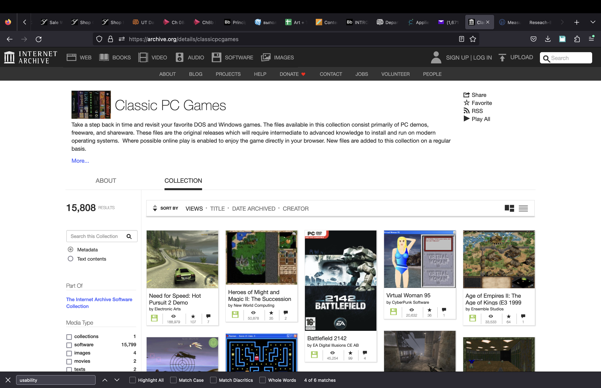
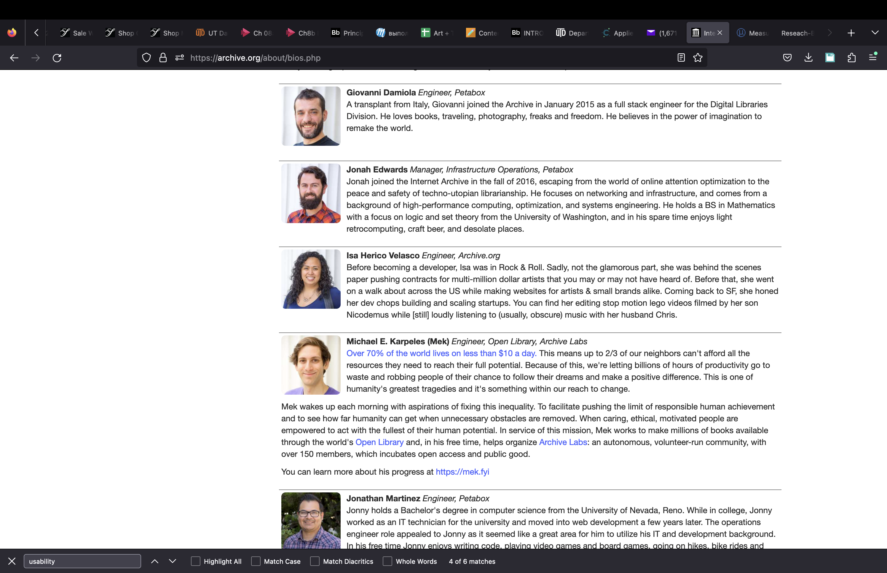
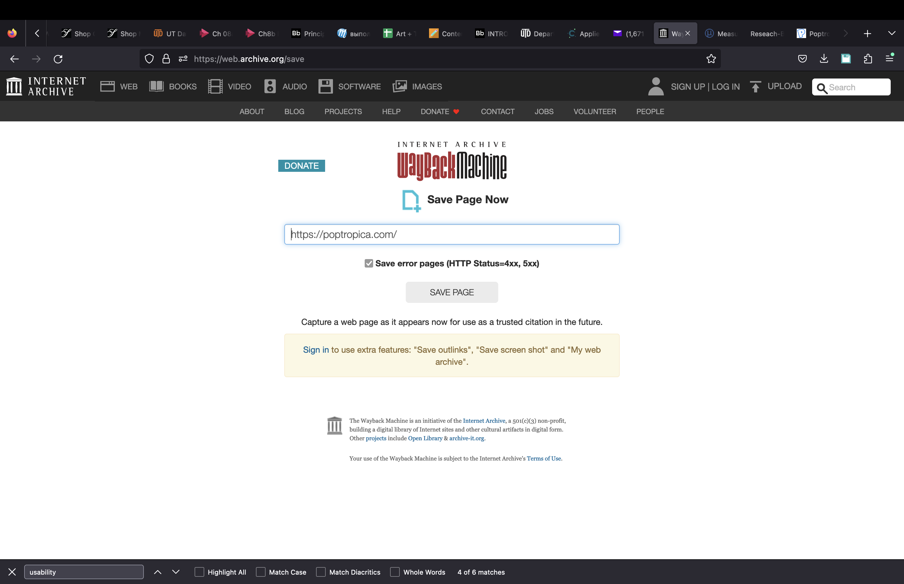
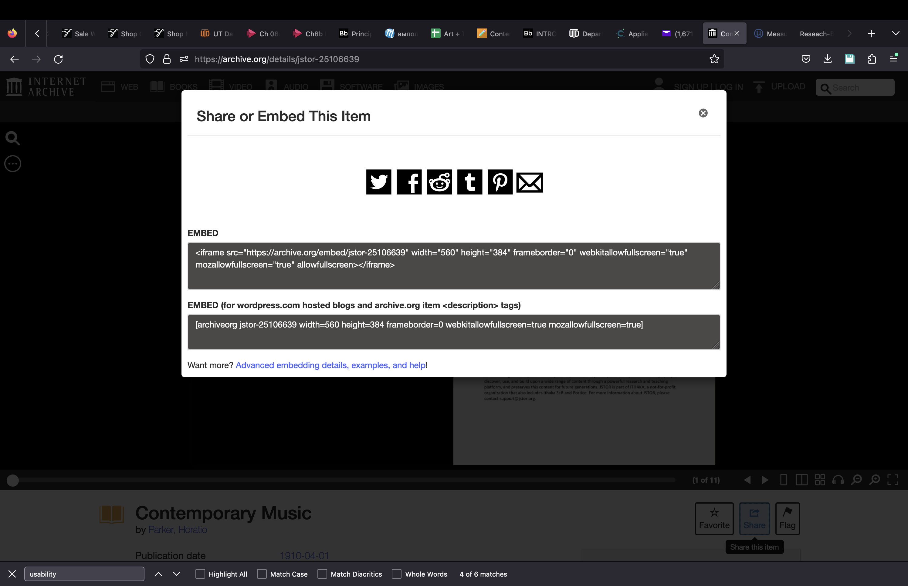
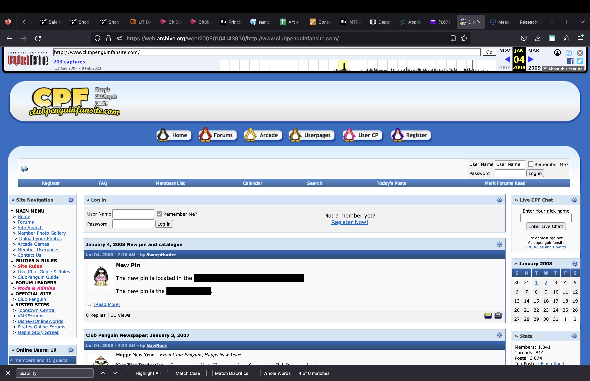

Group
1. Alena Meshcheriakova
2. Rachael Bang
3. Daniel Vincent
4. Zack Nguyen (designated tester)
Website: archive.org
Tasks:
1. Navigate to the classic PC games collection and "favorite" it.
3. Find Archive of Contemporary Music and share any album.
5. Save any webpage to the archive.
2. Find the name of the person who is the Manager of Infrastructure Operations for this website.
4. Find any archive webpage at least 10 years old.
